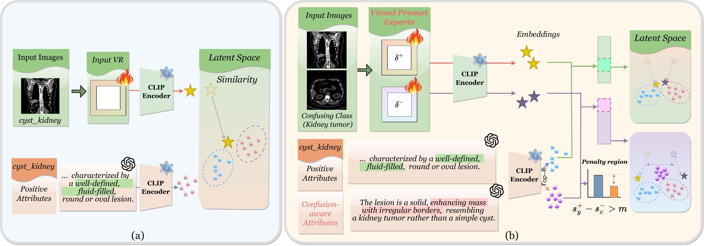
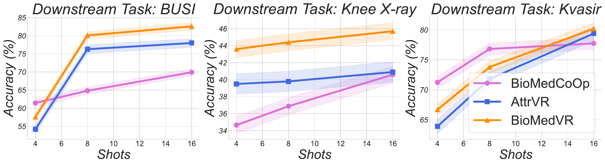
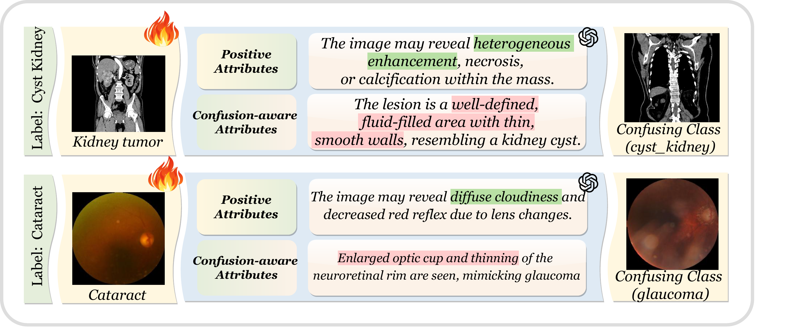

Recent advances in vision–language models (VLMs) such as CLIP have demonstrated strong generalization across natural-image domains. However, adapting these models to biomedical imaging is non-trivial: full-model fine-tuning is computationally expensive, while medical data are often scarce and exhibit subtle, fine-grained inter-class differences, making parameter-efficient adaptation particularly critical.
Visual Reprogramming (VR) offers a parameter-efficient alternative by injecting learnable perturbations into the input space, but existing VR approaches for VLMs mainly focus on positive class prompts and overlook confusing negatives, leading to miscalibrated predictions in fine-grained medical scenarios.
We present BioMedVR, the first VR-based framework for biomedical imaging, enabling few-shot adaptation of pretrained VLMs through compact learnable VR modules. To mitigate class confusion, we introduce a Confusion Minimization Mechanism that leverages LLM-generated confusion-aware attributes together with a Confusion-Suppression Loss to explicitly reduce false-positive alignment. The designed Mixture-of-Prompt Experts (MoPE) combines a positive expert for main-class discrimination and a negative expert for confusion suppression, balanced via adaptive gating.
Extensive experiments on 18 datasets—11 biomedical and 7 natural-image benchmarks—demonstrate that BioMedVR achieves superior accuracy and generalization, effectively bridging VR and VLMs in biomedical domains.

BioMedVR pipeline. Two compact, input-space VR programs (δ+, δ−) are injected into the image. Their CLIP embeddings are scored against class-level positive attributes and class-level confusion-aware attributes (LLM-generated). Adaptive gating fuses the two experts and a Confusion-Suppression Loss pulls the predicted score away from the confusing negatives. The CLIP backbone stays frozen throughout — only δ+, δ− and the gating vector are learned (≈ 300 K params).
16-shot accuracy (%) with ViT-B/16 CLIP backbone — best in bold.
BioMedVR improves over the prior VR / prompt-learning state of the art by
+3 to +10 points on confusion-prone datasets such
as Knee X-ray and DermaMNIST.
| Method | BUSI | Knee X-ray | Kvasir | LungColon | OCTMNIST | BTMRI | CHMNIST | COVID-19 | CT-Kidney | DermaMNIST | Retina | Avg. |
|---|---|---|---|---|---|---|---|---|---|---|---|---|
| Few-shot · 16-shot | ||||||||||||
| CoOp | 62.3 | 27.5 | 74.6 | 80.6 | 67.6 | 79.2 | 76.7 | 73.0 | 81.6 | 43.6 | 27.4 | 63.6 |
| CoCoOp | 64.4 | 30.6 | 77.2 | 89.4 | 69.2 | 80.4 | 71.5 | 76.2 | 78.6 | 44.6 | 52.5 | 66.6 |
| BiomedCoOp | 69.4 | 30.6 | 77.7 | 91.5 | 72.6 | 81.6 | 76.9 | 77.4 | 80.2 | 50.9 | 59.9 | 71.5 |
| VP | 70.9 | 41.2 | 75.2 | 90.8 | 65.3 | 61.8 | 70.8 | 67.3 | 67.6 | 64.6 | 74.8 | 68.2 |
| AR | 75.4 | 39.6 | 79.2 | 94.3 | 72.5 | 73.5 | 83.9 | 76.3 | 72.5 | 59.6 | 73.5 | 72.6 |
| AttrVR | 76.0 | 33.6 | 79.5 | 93.8 | 80.4 | 76.2 | 85.4 | 71.0 | 71.6 | 62.1 | 71.5 | 72.8 |
| BioMedVR (ours) | 82.6 | 45.7 | 80.2 | 94.7 | 80.3 | 81.7 | 84.5 | 77.4 | 74.0 | 65.3 | 74.1 | 76.4 |
| Δ vs. AttrVR | +6.6 | +12.1 | +0.7 | +0.9 | −0.1 | +5.5 | −0.9 | +6.4 | +2.4 | +3.2 | +2.6 | +3.6 |
Averaged across all 11 datasets, BioMedVR achieves 76.4 % top-1 accuracy — a +3.6 pp improvement over the strongest prior VR method (AttrVR), and +4.9 pp over the strongest prompt-learning baseline (BiomedCoOp). See the paper for Tables 2 (training cost) and 3 (7 natural-image benchmarks).

BioMedVR is competitive even with as few as 4 samples per class and saturates faster than AttrVR and BiomedCoOp as more shots are added — especially valuable in data-scarce clinical settings.

For each medical class, BioMedVR builds two types of textual prompts: positive attributes that describe discriminative visual cues (e.g. "heterogeneous enhancement, necrosis" for kidney tumour), and LLM-generated confusion-aware attributes that mimic the visually similar but semantically wrong class (e.g. "well-defined fluid-filled lesion" for cyst kidney). The negative expert is trained to push these confusing cues away, sharpening differential diagnosis.
@inproceedings{liu2026biomedvr,
title = {{BioMedVR}: Confusion-Aware Mixture-of-Prompt Experts for
Biomedical Visual Reprogramming},
author = {Liu, Jiaxiang and Hu, Tianxiang and Guan, Juwei and Wu, Yujie
and Wang, Yusong and Mu, Yao and Liu, Zuozhu and Xu, Mingkun},
booktitle = {European Conference on Computer Vision (ECCV)},
year = {2026}
}